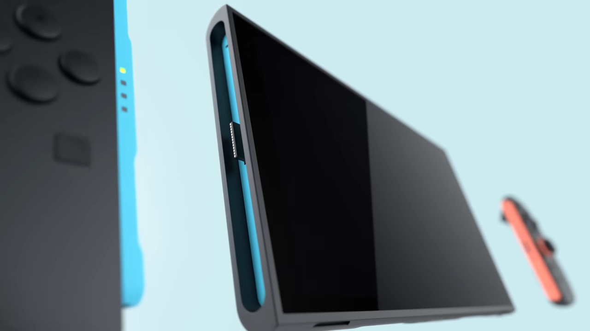
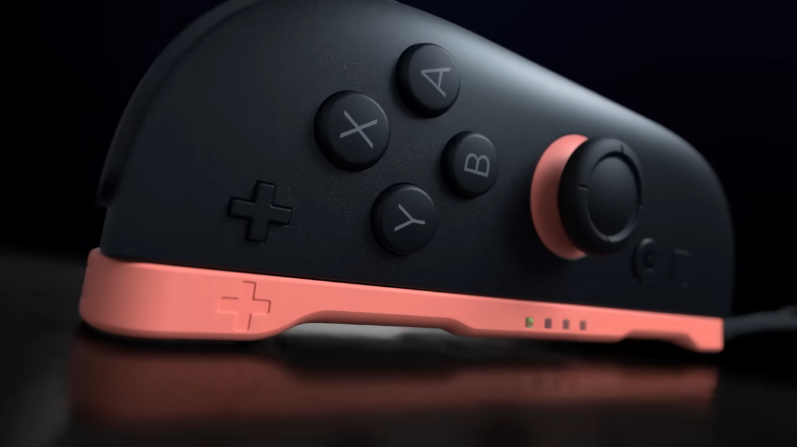
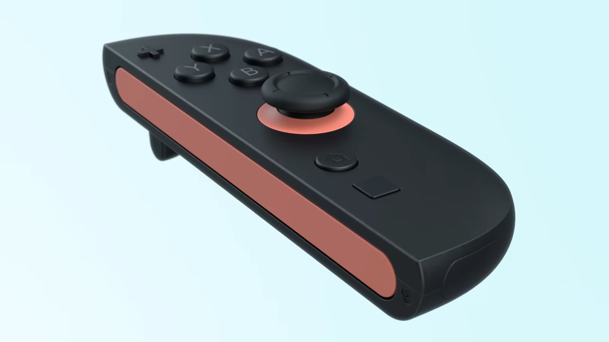
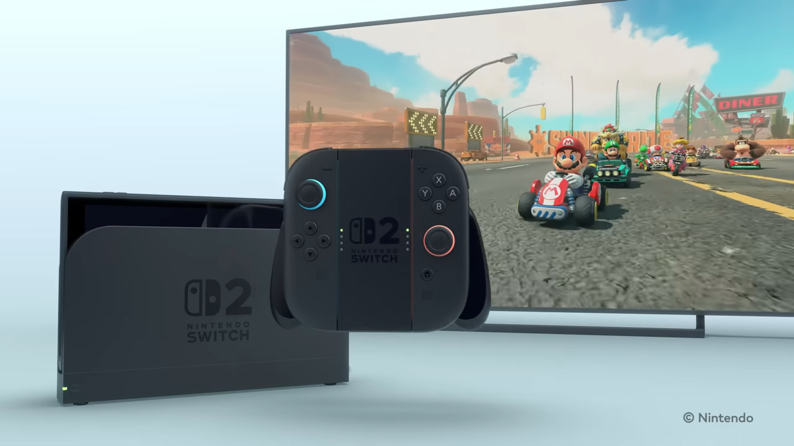
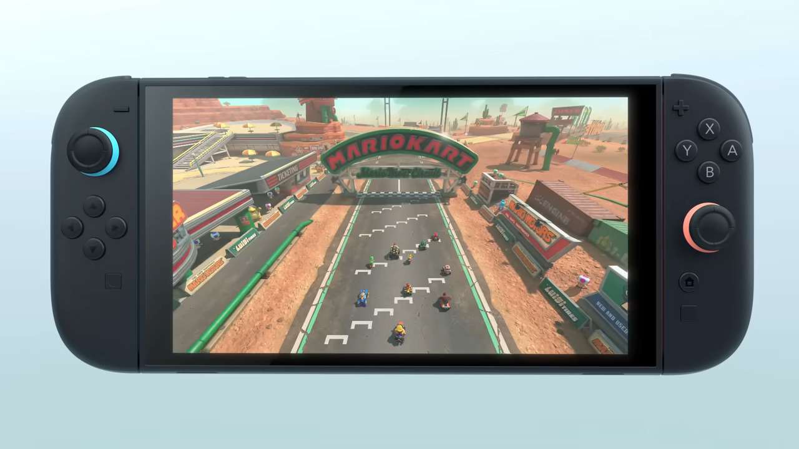
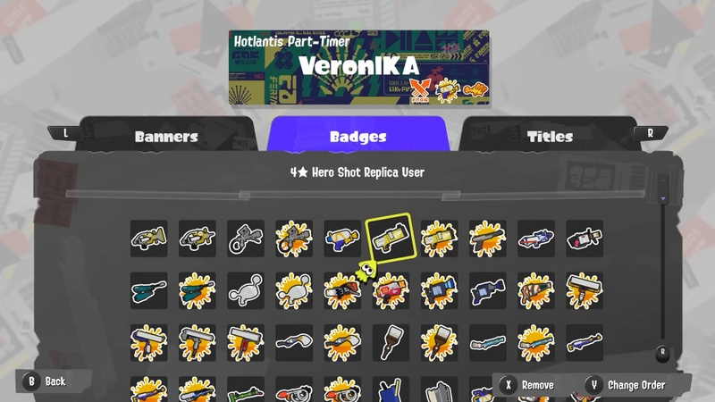
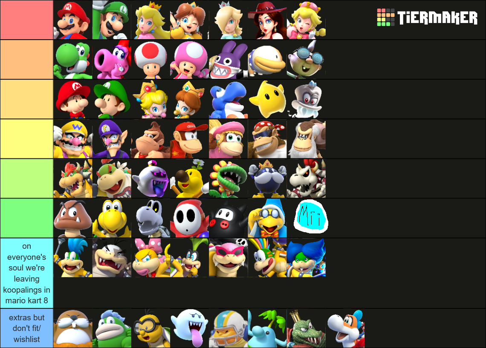
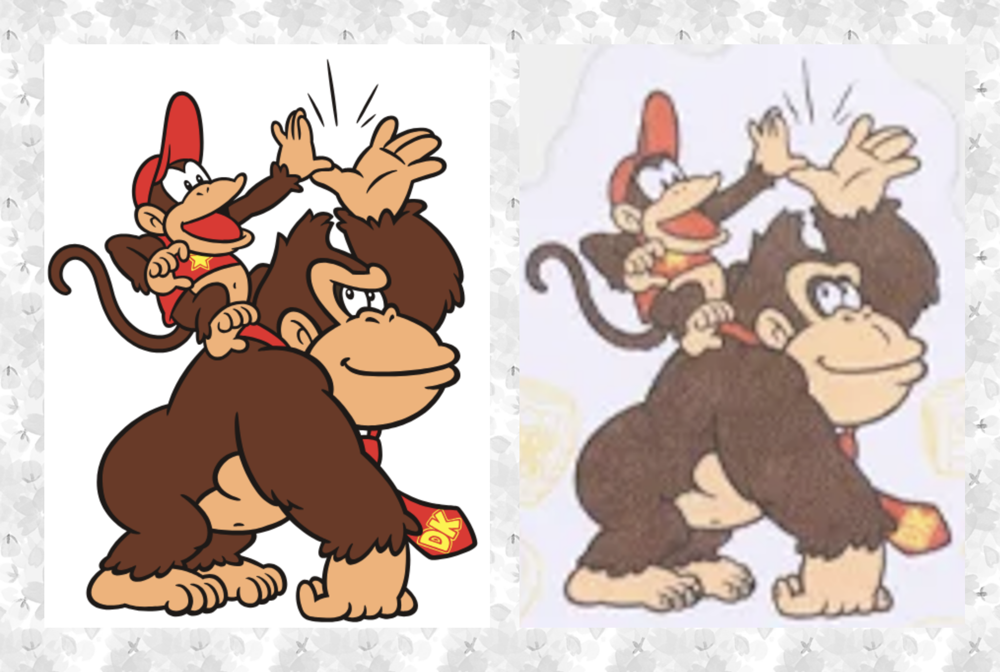

switch 2 overview & mario kart wishlist
2025 January 31they revealed the switch 2 about two weeks ago and i wanted to talk about it and the new mario kart they revealed even though i made a blog and completely forgot about it. so let's talk about it!
if u haven't watched the reveal here u go
brief overview of the switch 2
this is not the main subject of this post but i'll talk about it briefly.
magnetic joy-cons
the rails were cool but ngl why didn't they just do this in the first place. solves the whole problem of joy-cons sliding on the wrong way on the console and straps. hopefully it's secure enough to not fall off and it doesn't snap too hard. also people are saying the little plastic part on the console is gonna break off like nintendo would not just let that happen...
mouse joy-cons
it's not explically stated but it's heavily implied that the joy-cons are moving like a mouse and u can also see the joy-cons have an optical sensor just like a mouse. it's interesting but a lot of people are suggesting things that could be done with gyro, like kid icarus. i still want nintendo to push gyro for playstation and xbox (xbox add gyro u old fuckers).
i think it would be good for splatoon and mario maker though. maybe it could finally make splatoon accessible to competitive shooter players. here's to hoping cause i really want the splatoon comp scene to grow.
prochara made a video talking about it if u want to listen to more about it
the mysterious non-existant c button
for some reason the c button is there but not the C icon, but we know it exists based on the leaks however we don't know what it does. there was a fake leak that it was gonna be miivese 2 basically but i think it's gonna be related to something social. that or voice chat. or both. i hope it's both.
that was not brief my bad. onto the main topic
NEW MARIO KART AFTER 80 YEARS
the 10+ year long reign of Mario Kart Mid is finally ending on the switch 2. a lot of people are thinking "there's no way they can top 96 tracks in one game right?" well yes actually there's a lot of things they could do. such as...
24 PLAYERS OMG
seeing 24 players being discovered in mario kart wii was so cool and it also worked online! playing with 23 other people online sounds so fun. aaaand then mrbean35000vr never released it... but now we don't need a mod! this is definitely the most feature i'm excited for and they haven't even shown anything. i'm concerned about online play though but it might just not be playable online. mk8 online is abysmal dogshit.
online mode
i just mentioned this but i hope they improve the online connection. you'll hit someone with a shell and nothing happens. it's that bad.
also hot take but i want them to add a ranked mode. it doesn't even have to be that different but VR should actually mean something like x power in splatoon. the more u play the more VR u gain it's not based on ur performance, like right now it's basically just a level.
pool codes like splatoon would be nice as well (honestly just make it built in the switch 2)
single player campaign
i think it would be cool to have a single player campaign unrelated to grand prix. crash team racing and diddy kong racing has one, why not mario kart? i think it would be cool, especially for unlockables.
splashtag/passport equivalent
nintendo has started adding a card that u can customise in their big games. although the splatoon and acnh devs are the same so they probably just brought the idea over i hope they add it to mario kart as well. having a customisable card with badges as ur achievements is a really cool idea.
charater roster
i made a character roster completely unrelated to this post i was just bored. last column is mostly filler
i think this roster is pretty good. there's no non-mario characters cause they weren't on the tier list but i would prefer them as dlc anyway. captain falcon is required
also yes i hate the koopalings they're so boring, bowser's enemies are far more interesting. i never see people play them except for when they're meta. if they are added then idc anyway (they probably will). also also yes baby rosalina is in the game but hopefully they patch that bug out
i'm not doing a track prediction sorry. on everyone's soul except mine we WILL see toad's factory
character redesigns
the characters are getting a redesign and they look pretty much the same. mario looks like his mario rpg adaptation, bowser looks more like a beast(?), the princesses don't have bike outfits anymore which i'm mixed about.
however the only redesign i don't like is the one who got changed the most which is DK. his eyes are more rounded and he looks more friendly which i don't like. he's supposed to be a big brawly gorilla that fights things with his fists. he doesn't feel like he's supposed to be very friendly. not to say there can't be a middleground but i think it's is too much. maybe it'll grow on me idk
(also yes this is a universal change to his design not just mario kart)
and that's everything from the trailer! i am quite excited for the direct, hopefully they reveal a lot such as the OS cause ngl i wanted to look at it more than mk9. but i am also concerned for my wallet cause i wanna upgrade my pc and i want the new console which is like £1500+ in total potentiallity and i don't got that! i never usually want money but if i had like £3k i could buy everything i wanted. well that's all for now